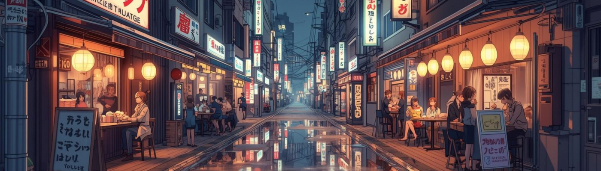
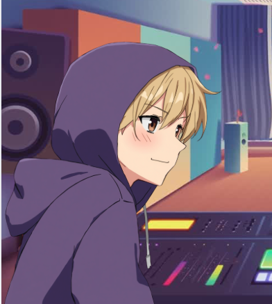

Oskar
Co-Host
Mag am liebsten Shonen und lange Manga-Reihen. Findet meistens, dass der Manga besser ist als die Anime-Umsetzung.

Der Anime & Manga Podcast — zwei Freunde, unzählige Bände und zu viele mangas.
In zu viele mangas reden Oskar und Elias über die Animes und Mangas, die sie gerade lesen und schauen. Klassiker, neue Serien, Geheimtipps — einfach alles, worüber sie sich sonst sowieso unterhalten würden.
Kein Script, keine vorbereiteten Meinungen — einfach zwei Freunde, die über ihr Hobby reden.
Die neuesten drei Folgen werden automatisch von Apple Podcasts geladen. Klick auf eine Folge und hör sie direkt dort — oder spring zum kompletten Podcast auf Spotify.
Folgen werden geladen …
Mag am liebsten Shonen und lange Manga-Reihen. Findet meistens, dass der Manga besser ist als die Anime-Umsetzung.

Mag Seinen und Studio Ghibli. Hat oft eine andere Meinung als Oskar.